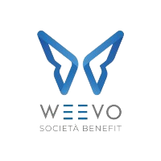

L'azienda ospite

| Nome | Weevo S.R.L. |
|---|---|
| Attività | Sviluppo di siti web e campagne pubblicitarie online. |
| Forma giuridica | Società a Responsabilità Limitata. Dal 2022/2023 società benefit. |
| Sede | Castiglione delle Stiviere (MN) |
Weevo S.R.L. · Web Content Management & Publishing

| Nome | Weevo S.R.L. |
|---|---|
| Attività | Sviluppo di siti web e campagne pubblicitarie online. |
| Forma giuridica | Società a Responsabilità Limitata. Dal 2022/2023 società benefit. |
| Sede | Castiglione delle Stiviere (MN) |
Prosecuzione di un progetto per Legambiente Castiglione: selezione di immagini e testi per post Facebook e successivo caricamento degli elementi in un sito in corso di realizzazione tramite WordPress.
Avvio dell'analisi di un progetto di single page per un ristorante a Creta (realmente esistente): selezione di immagini e testi, progettazione della struttura del sito in un documento Word.
Creazione della pagina web del ristorante con un generatore di single page: Novi Builder. Layout, sezioni e contenuti configurati secondo il brief del cliente.
Allineamento del sito in stage con quello in produzione per l'azienda Ocmis: caricamento di notizie in italiano e inglese con Drupal 8.
Integrazione delle modifiche nel sito del ristorante richieste dal proprietario.
Caricamento di una news in tedesco nel sito Ocmis, sia in stage che in produzione.
Ulteriori modifiche al sito del ristorante e caricamento su server con FileZilla, in preparazione del rilascio in produzione. Creazione del popup cookie policy nel footer.
Correzione del codice in stage: visualizzazione errata di un'immagine, link per accedere alla mail e al WhatsApp del ristorante.
Consultazione di documenti relativi a piani editoriali social, di diversa complessità, curati dall'azienda ospitante.
Caricamento della single page online, verifica della correttezza della visualizzazione e integrazione di un cookie bot. — Visita il sito pubblicato .
Durante questa esperienza ho imparato molto sul processo di creazione e gestione di siti web, dall'analisi iniziale alla pubblicazione finale. Le difficoltà principali riguardavano l'utilizzo di software nuovi, ma grazie al supporto del tutor e dei suoi collaboratori sono riuscito a superarle rispettando le scadenze.
Questa esperienza mi ha permesso di sviluppare competenze critiche, capacità di problem solving e creatività. Sono grato per l'opportunità di aver lavorato con un giusto equilibrio tra autonomia e guida: libertà di esplorare soluzioni ma con la rete di sicurezza di un tutor sempre disponibile.